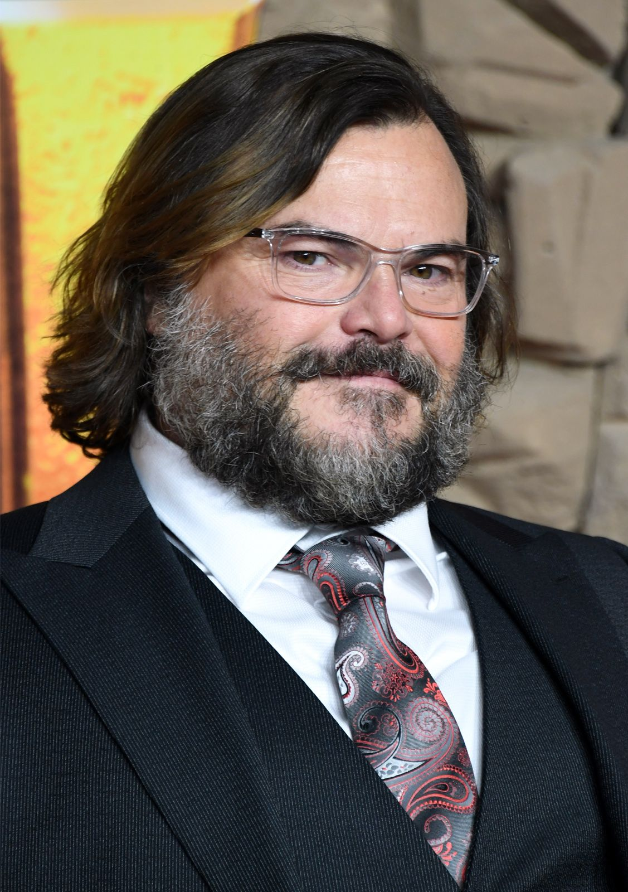
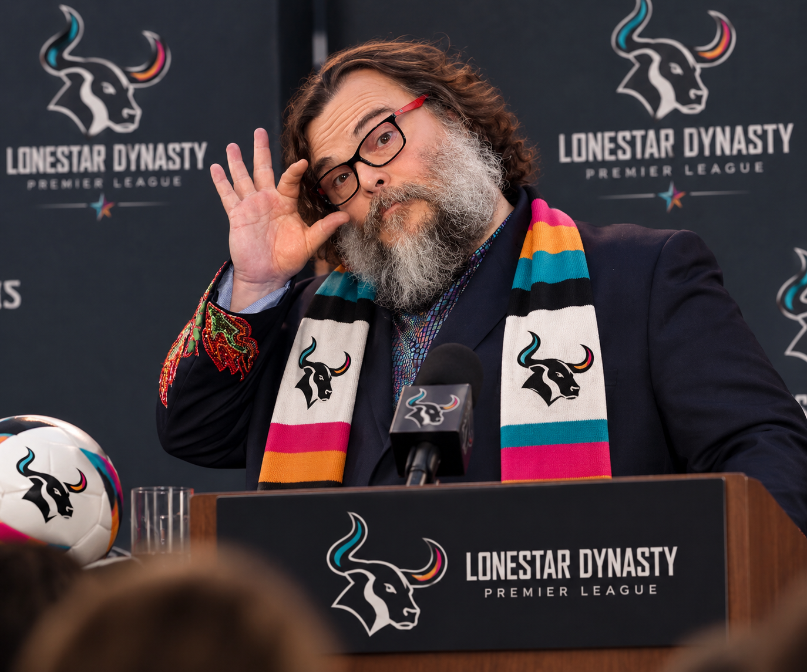

Lonestar
Lonestar
A new era of leadership has begun in the Lonestar Premier League.
Diego has officially stepped down as Commissioner, ending his tenure at the head of the league to focus entirely on his role as owner and President of Football Operations at Leon Valley.
His replacement has already been chosen.
Jack Black is the new Commissioner of the Lonestar Premier League.
The announcement arrives at an interesting moment. Recent weeks have brought increased scrutiny toward the Commissioner's office, most notably from Space Cadets, whose leadership publicly criticized the league and its Commissioner.
Naturally, that raised one question.
Did Space Cadets open a can of worms?
According to the outgoing Commissioner, absolutely not.
“This Was Always The Plan.”
WCCC Media learned of the potential change during a private conversation with the Commissioner.
Asked whether managers deserved to know what prompted the move, and whether the recent Space Cadets criticism played any role, Diego gave a simple answer.
“This was always the plan. We believe Mr. Black is the perfect person to lead us into the next chapter of this league.”
WCCC Media pressed further, asking whether any difficult conversations had taken place between the outgoing Commissioner and his successor.
Again, there appeared to be no drama behind the scenes.
“Only supportive words were exchanged. Mr. Black was hand picked by our ex commissioner. We are in the best of hands.”
But in his final remarks as Commissioner, Diego revealed a larger reason behind the decision.
Leon Valley Comes First
As Leon Valley grew into a larger part of Diego's responsibilities, so did an uncomfortable reality.
Could one person fairly run a club and the league governing that club?
Even without evidence of wrongdoing, Diego acknowledged that the appearance of a conflict was becoming impossible to ignore.
“The integrity of this league has always been bigger than any one club or any one individual.”
He explained that stepping aside was necessary to ensure future decisions from the Commissioner's office could not be questioned because of his position at Leon Valley.
That responsibility now falls to Mr. Black, a man Diego personally selected because he believes the new Commissioner enters the position without allegiance to any individual club.
From Hollywood To The Commissioner's Office
For decades, Jack Black entertained audiences around the world, becoming one of Hollywood's most recognizable personalities.
But following his recent retirement from the film industry, Mr. Black found himself searching for a new challenge.
That search ultimately led him to football.
Long fascinated by the sport, Mr. Black had reportedly developed a growing interest in the Lonestar Premier League, particularly its ambitious vision, passionate club ownership, and rapidly emerging rivalries.
When Diego began considering his departure from the Commissioner's office, Mr. Black emerged as an intriguing candidate.
For the former Hollywood star, the opportunity represented something entirely different from his previous career.
A chance to step away from the cameras and help shape a growing football competition.
For Diego, the appeal was equally clear. Mr. Black offered a recognizable public presence, a fresh perspective, and most importantly, independence from the league's competing clubs.
What began as an unlikely conversation eventually developed into a serious opportunity.
And when the position became available, Mr. Black was ready to answer the call.
Hollywood had already witnessed his rise.
Now, the Lonestar Premier League would become his next stage.

Enter Jack Black
The Lonestar Premier League now belongs to a new administration.
Mr. Black inherits a league that is rapidly developing an identity of its own, complete with clubs, rivalries, controversy, a new website, and the first pieces of league history already being written.
His appointment also marks a significant change in how the competition will be governed.
For the first time, the Commissioner's office will operate independently of any club ownership.
While Mr. Black's entertainment background may be unconventional for a football executive, league leadership believes his personality, enthusiasm, and fresh perspective could help bring greater attention to the growing competition.
But celebrity alone will not define his tenure.
His job is simple in theory.
Protect the interests of the league.
With the competition continuing to expand its identity and rivalries growing increasingly intense, Mr. Black will be expected to maintain order while ensuring every club competes on equal terms.
And if recent controversies are any indication, the new Commissioner may find that managing football personalities is every bit as unpredictable as Hollywood.
Diego's job, meanwhile, is about to become very different.

One Final Message From Diego
Before departing, WCCC Media thanked the former Commissioner for his service and assured him that the entire Lonestar Premier League would miss his leadership.
His final message made clear that while his time governing the league is over, he is not going anywhere.
“I'm proud of what we built during my time as Commissioner, and I have tremendous confidence in the leadership that follows.
Now, I get to experience this league from a different seat.”
And then came perhaps the most important line of all.
“The Commissioner's office will protect the interests of the league. I'll be trying to win it.”
The Diego administration is over.
The Leon Valley era of his career begins in full.
And for the first time, the Lonestar Premier League has an independent Commissioner.
From Hollywood's bright lights to the unpredictable world of football, Mr. Black has found himself an entirely new stage.
Only time will tell what his leadership brings to the competition.
But one thing is certain.
The Lonestar Premier League has entered a new era.
Welcome to the Jack Black era.